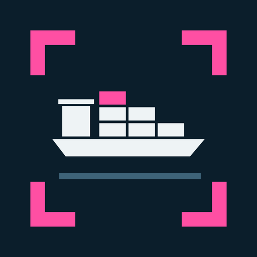
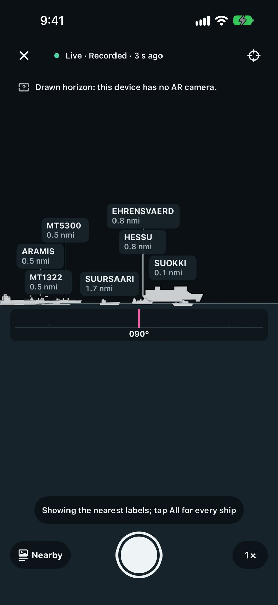
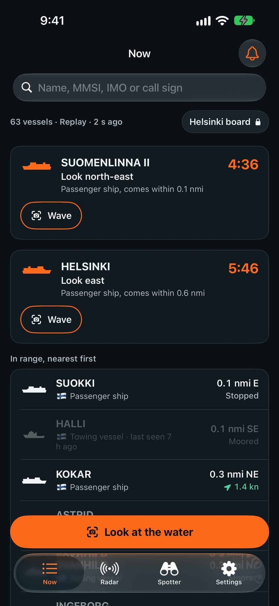
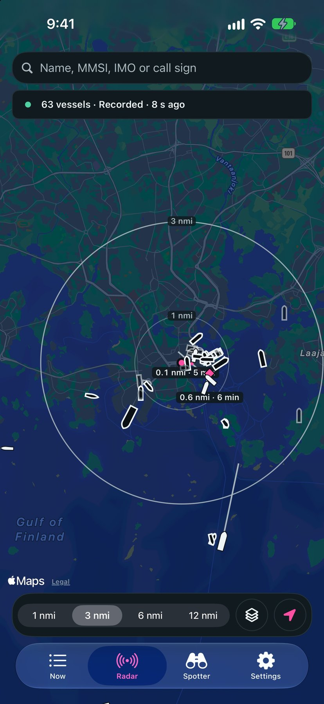
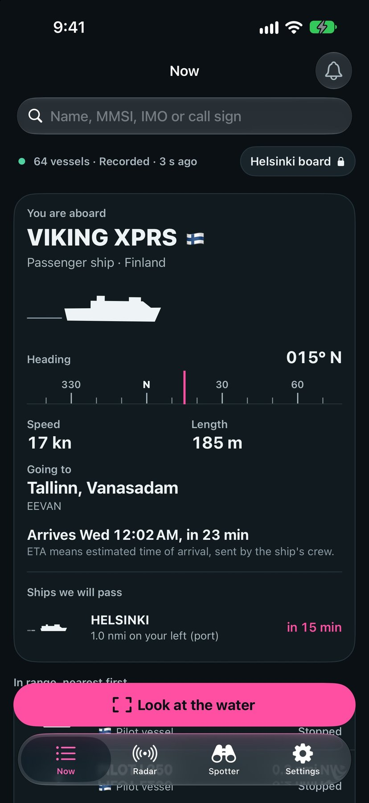
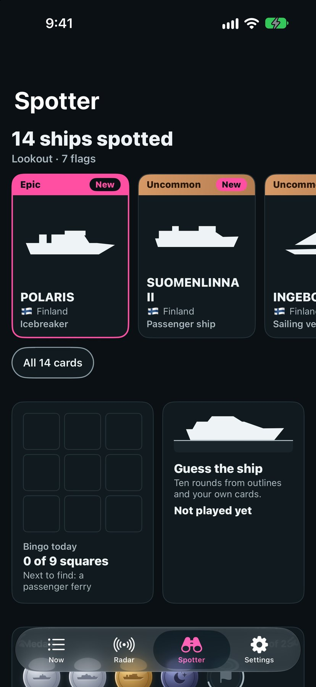
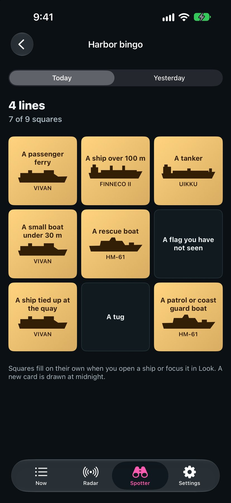
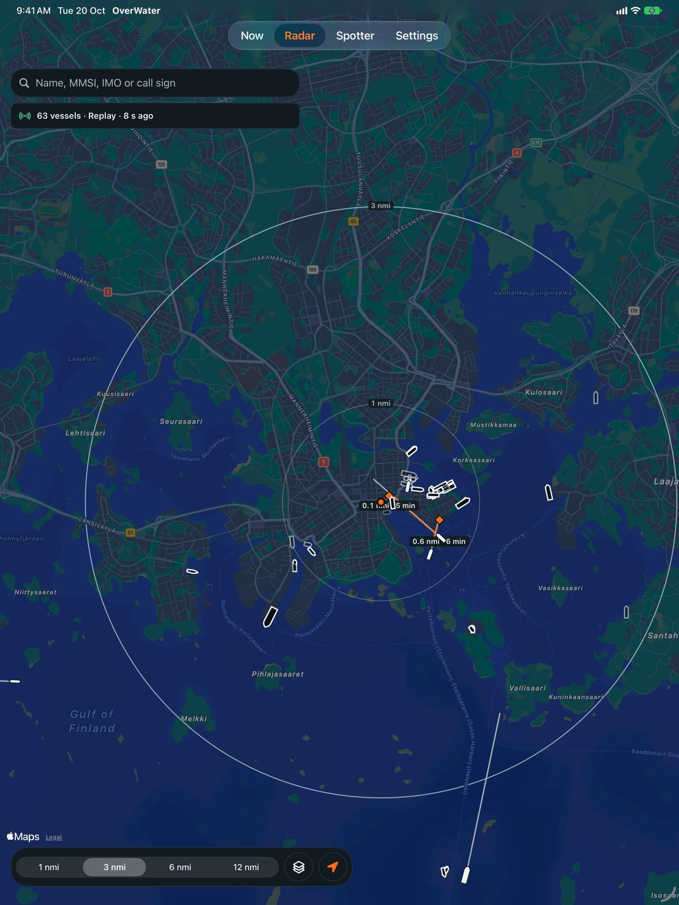

OverWater press kit
Point your iPhone at the water, see every ship named · updated 20 October 2026
What it is
OverWater is an iPhone and iPad app for identifying ships. Point the camera at the water and every vessel in sight is labelled on the horizon with its name and distance. Tap one for its type, flag, length, destination and arrival time. The same ships appear on a radar map, and each one you spot becomes a collectible card.
One-sentence pitch
Point your iPhone at the water and OverWater puts a name on every ship in view.
Features
- Look: camera view with ship labels on the horizon, a compass ribbon, and a drawn horizon when the camera or tracking is not available.
- Radar: map with range rings at 1, 3, 6 and 12 nautical miles and six-minute course lines.
- Now: live list of ships in range, sorted by distance, with fix age on every row.
- Aboard mode: when your phone's track matches a ship, such as a ferry, the Now tab shows that ship's speed, heading, destination, arrival time and the ships you will pass.
- Passing alerts: a card with the side to look and a countdown when a ship will pass within one nautical mile.
- Ship cards, harbour bingo, a 10-round quiz and medals.
- Learn to Spot: 12 vessel types explained in plain words.
- Photo mode: labels baked into the picture. Photos are saved only when you tap Save.
- Search by name, MMSI, IMO number or call sign across the whole feed.
Free and Pro
Free for good: Look, radar, the Now list, the first 3 vessel details, aboard mode, passing alerts, ship cards, harbour bingo, the quiz, photo mode, Learn to Spot, medals and search. Pro is a yearly subscription that adds unlimited vessel details, the port board for the nearest port, and custom alerts. Anything free in 1.0 stays free. There are no ads and no account.
Where it works
Live traffic covers the Baltic Sea and the Gulf of Finland in 1.0. Everywhere else the app offers a recorded Helsinki feed, clearly marked as recorded, so it can be tried from any location. Boats without AIS do not appear; most pleasure craft under 15 metres carry none. Every ship shows the age of its last position.
Data sources and licences
- Live ship positions and vessel details: Fintraffic / digitraffic.fi, licence CC BY 4.0 (digitraffic.fi).
- Country of registration is derived from the MMSI prefix using the ITU maritime identification digits table.
- Maps: Apple Maps through MapKit.
Facts
- Version
- 1.0, built with Xcode 27.1
- Platforms
- iPhone and iPad, iOS 18 or later
- Languages
- 5 locales: English (US, UK, Australia, Canada) and Spanish (Mexico)
- Price
- Free, with a yearly Pro subscription. No ads.
- Privacy
- No account, no tracking. Location is used on the device. Privacy policy.
- Accessibility
- Light and dark appearance follow the device, Reduce Motion is respected, haptics on iPhone.
- Developer
- One developer in Dubai
Screens
Screenshots from the 1.0 build, English (US). Images appear here when the final set is added under img/.






